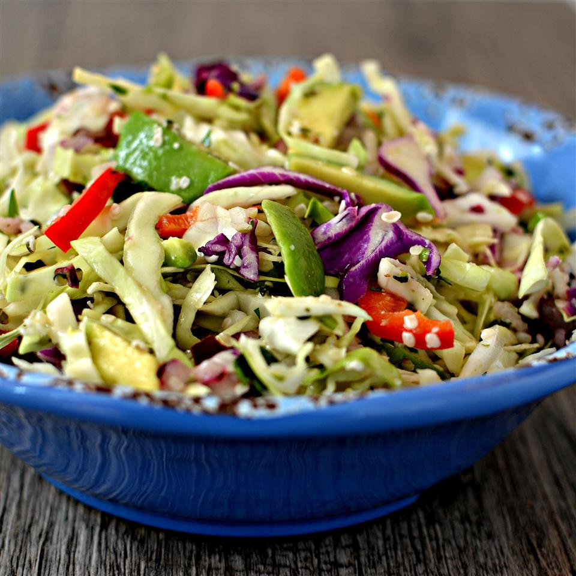

< Go back
Lemony Cabbage-Avocado Slaw

Description
Creamy avocado and bright lemon make great partners in this colorful salad.
Ingredients
- 6 cups finely shredded white and red cabbage
- 1 ripe avocado, diced
- 1 small red bell pepper, chopped
- ¼ cup shelled hemp seeds
- 3 tablespoons lemon juice
- 3 tablespoons chopped fresh cilantro
- 2 tablespoons finely chopped red onion
- ¼ teaspoon fine sea salt
Steps
- Combine cabbage, avocado, red bell pepper, hemp seeds, lemon juice, cilantro, onion, and sea salt in a large bowl; toss together until slaw has a creamy consistency.
- From now on, the next steps are just placehorlders. Heat oil in a large saucepan. Add mushrooms, green peppers, onion, and garlic; cook and stir until tender,
about
5 minutes. Stir in pasta sauce and basil; bring to a boil.
Reduce heat, and simmer for 15 minutes.
- While the sauce is simmering, mix together ricotta, 2 cups mozzarella cheese, and eggs in a medium bowl.
- Preheat the oven to 350 degrees F (175 degrees C). Grease a 9x13-inch baking dish.
- Spread 1 cup cooked tomato and vegetable sauce into the bottom of the prepared baking dish. Lay down 1/2 of
the
lasagna noodles and layer
1/2 each of the ricotta mix, sauce, and Parmesan cheese on top. Repeat layering again with noodles, ricotta
mix,
sauce, and Parmesan cheese. Top with remaining 2 cups mozzarella.
- Bake in the preheated oven, uncovered, for 40 minutes. Let stand for 15 minutes before serving.